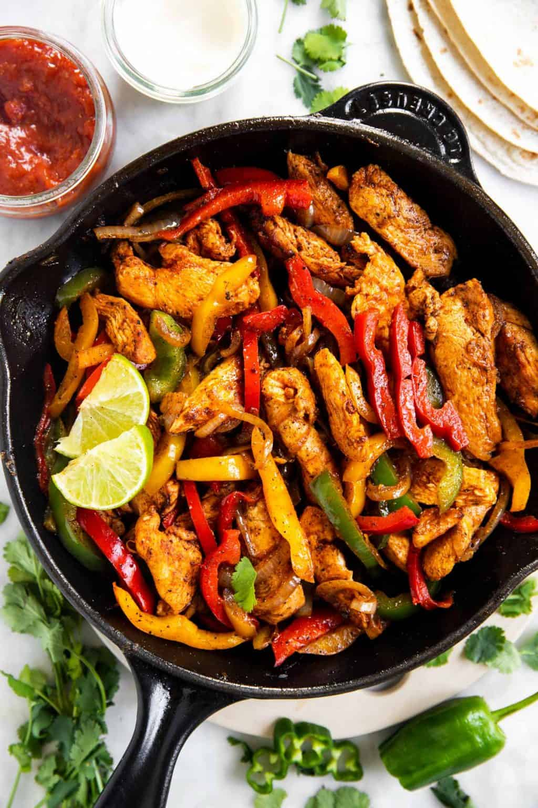

Chicken Fajitas

Our Favourite Chicken Fajitas
Chicken Fajitas are an easy and flavorful weeknight meal.
A classic Mexican recipe, juicy chicken is seasoned, seared and cooked to perfection,
then tossed with sauteed bell peppers and onions
A squeeze of fresh lime adds a punch of flavor and the chicken fajitas are served with warm tortillas and toppings.
You can’t beat this healthy family favorite recipe.
Ingrediets
- 3 boneless skinless chicken breasts
- 1 onion, thinly sliced
- 3 bell peppers, thinly sliced
- 2 tablespoon olive oil
- 1/2 lime
- 1/2 tablespoon chili powder
- 1/2 tablespoon ground cumin
- 1 teaspoon garlic powder
- 1/2 teaspoon paprika
- 1/2 teaspoon oregano
- 1/2 kosher salt
- 1/4 teaspoon ground black pepper
- tortillas
- sour cream
- pico de gallo
- avocado
Steps
- Season the chicken. Generously sprinkle the fajita seasoning on both
sides of the chicken and use your fingers to press it in.
- Cook the chicken. Heat a large skillet
over medium heat and lightly coat it with a drizzle of olive oil or avocado oil.
Sear the chicken breasts for about 7-8 minutes on each side. Then remove them
from the pan and let them rest for a few minutes before slicing into strips.
- Saute the bell peppers and onion. While the chicken is cooking, cut the bell
peppers and onions into thin slices. Then saute them in the same skillet over
medium heat for a few minutes until caramelized. You’re essentially making fajita veggies.
- Mix together. Add the chicken back into the skillet, squeeze fresh
lime juice on top and stir everything together.
- Wrap it up. Serve immediately with tortillas and extra toppings.